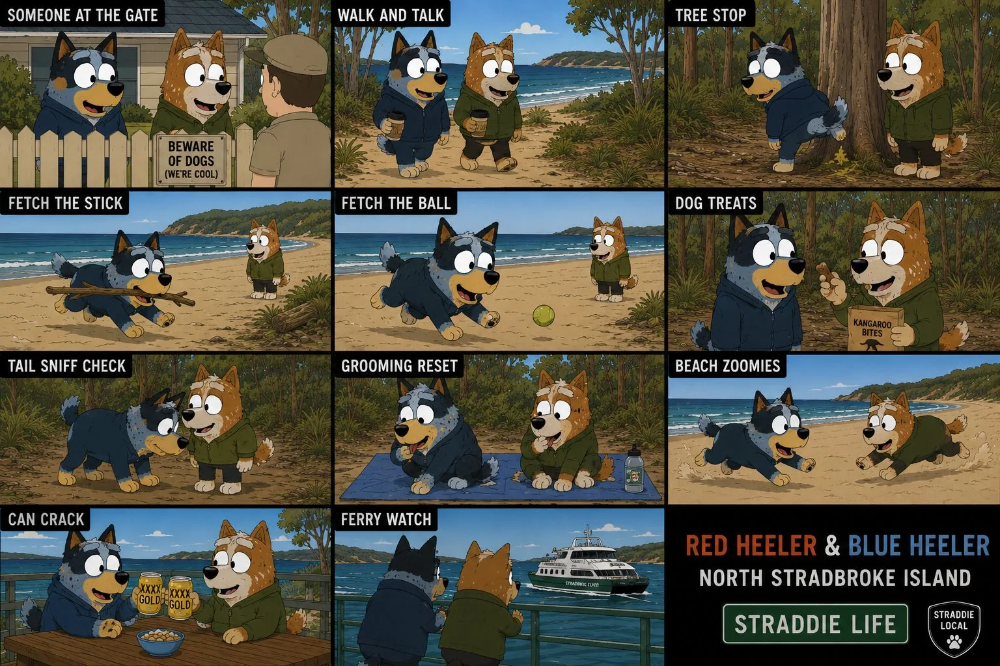

Micro scene pipeline
Build tiny animated cutaways without losing the yarn.
Pick a short dog-world beat, tune the timing and frames, then export a compact Markdown note. Angel controls Blue Dog; Red Dog can set up the gag, research jump or return line.

Micro scene
Pipeline form
Save to scenes/micro-scenes/